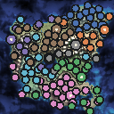

500-Year Stress Test
A 128x128, five-civilization simulation stress probe run with civilization seed 77 on July 7, 2026.

Run Summary
The run completed cleanly and wrote the final profile JSON plus PNG render. The final checkpoint held 2,309,193 compacted legend events, 2,485,809 spilled legend event texts, and 6,775,080 nested event-id links.
The heaviest final phase timings were civilization expansion/conflict at 52.2s, settlement creation at 52.2s, settlement agent seeding at 50.9s, settlement adult seeding at 48.6s, agent economy at 25.1s, and health/death at 16.7s.
The spilled event text directory is retained locally at output/stress-probes/probe-500-event-text. It contains 607 JSON chunks totaling 406,101,180 bytes, so it is not copied into this published page.
Checkpoint Growth
| Year | Elapsed | Alive | Total Agents | Settlements | Roads | Legend Events | Heap Used | RSS |
|---|---|---|---|---|---|---|---|---|
| 100 | 2m 15s | 12,107 | 27,691 | 25 | 15 | 293,424 | 1,062 MB | 1,834 MB |
| 200 | 6m 59s | 18,196 | 54,075 | 45 | 29 | 629,259 | 2,184 MB | 3,128 MB |
| 300 | 17m 31s | 22,548 | 88,447 | 65 | 34 | 1,140,195 | 3,856 MB | 5,205 MB |
| 400 | 37m 41s | 28,617 | 130,437 | 89 | 47 | 1,762,784 | 5,803 MB | 7,693 MB |
| 500 | 83m 49s | 33,013 | 182,910 | 121 | 42 | 2,586,562 | 8,298 MB | 10,492 MB |
Final Counts
| Memories | 695,839 | Opinions | 214,248 |
| Residences | 223,814 | Careers | 419,602 |
| Memberships | 62,426 | Activities | 100,297 |
| Holdings | 18,431 | Belongings | 14,212 |
| Fallen civilizations | 20 | Successor civilizations | 23 |
| Deaths recorded | 149,897 | Births recorded | 182,910 |
Command
npm run stress:500
The script expanded to node --expose-gc --max-old-space-size=12288 dist/world-mapgen.cjs --size 128 --controls examples/controls/simulation-controls.example.json --civilizations 5 --years 500 --civ-seed 77 --progress-every 100 --profile-civ-phases --gc-after-compaction --spill-event-text-dir output/stress-probes/probe-500-event-text --spill-event-text-after 10 --spill-event-text-every 5 --spill-event-text-cache-chunks 256 --civ-profile-dir output/stress-probes/probe-500-profiles --civ-profile-json output/stress-probes/probe-500-final.json --out output/stress-probes/probe-500-final.png.
{kind=link}